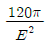
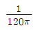
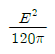
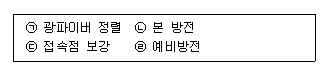
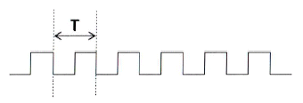
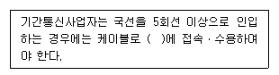
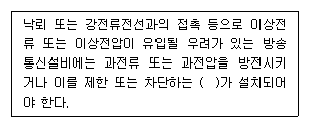
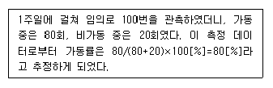

통신설비기능장 (2016-03-05 기출문제)
1과목: 임의 과목 구분(20문항)
1. 다음 중 푸시 버튼 전화기에 대한 설명으로 잘못된 것은?
- 선택신호는 음성 주파수대의 신호를 사용한다.
- 푸시 버튼에는 숫자 버튼외 서비스 버튼이 있다.
- 저군 4 주파수와 고군 3 주파수와의 음성 주파수대 2개를 조합하여 선택신호를 구성한다.
- Data 전송용 또는 원격 제어용에도 사용할 수 있다.
(정답률: 91%)

2. 전자교환의 망형 회선망에서 60개의 장소를 상호 연결할 수 있는 총 전송로는 몇 회선이 되는가?
- 59
- 61
- 1,770
- 3,540
(정답률: 92%)
3. 무선통신 채널의 신호대잡음비(S/N)가 31이고 채널대역폭이 125[kHz]일 때, 최대 전송용량은?
- 432[kbps]
- 500[kbps]
- 625[kbps]
- 750[kbps]
(정답률: 91%)
4. 전자교환기에 사용되는 푸시 버튼 다이얼(Push Button Dial)에서 “8”의 숫자에 알맞은 저군과 고군 주파수[Hz]의 조합은?
- 저군 : 941, 고군 : 1209
- 저군 : 852, 고군 : 1336
- 저군 : 770, 고군 : 1477
- 저군 : 697, 고군 : 1633
(정답률: 91%)
5. 다음 변조 방식에서 비트 에러 확률의 성능이 좋은 순서대로 된 것은? (단, SNR은 동일하다.)
- ASK > FSK > PSK
- FSK > ASK > DPSK
- DPSK > QAM > FSK
- QAM > DPSK > FSK
(정답률: 82%)
6. 다음 중 동기 전송 방식과 비동기 전송 방식에 대한 설명으로 틀린 것은?
- 동기 방식은 데이터 블록의 앞에 동기문자가 사용된다.
- 동기 방식은 한 묶음으로 구성하는 글자들 사이에는 휴지 간격이 없다.
- 비동기 방식은 전송 속도가 보통 2,400[bps]을 넘는 경우에 사용한다.
- 비동기 방식은 스타트 비트 뿐만 아니라, 스톱 비트도 필요하다.
(정답률: 87%)
7. 다음 중 MSPP(Multi Service Provisioning Platform)에 대한 설명으로 옳지 않은 것은?
- MSPP란 단일 장비상에서 전용선, 이더넷, SAN, ATM 등의 서비스 제공이 가능한 복합서비스 장비이다.
- MSPP는 기존의 SDH 기술과 Virtual Concatenation, LCAS, GFP, MPLS 등의 신기술을 이용하여 고품질, 고신뢰의 이더넷 서비스를 사용자가 원하는 다양한 속도로 제공할 수 있다.
- LCAS(Link Capability Adjust Scheme) 기능은 이더넷 트래픽을 전달하기 위한 링크로 복수의 물리적 SDH신호를 논리적으로 그룹핑하는 다중화기술이다.
- 이 기술을 활용하면 사용자에게 64[kbps] 또는 2[Mbps]의 배수로 속도를 보장할 수 있으며 이것을 EOS(Ethernet Over SDH) 서비스라 한다.
(정답률: 71%)
8. 다음 중 DPCM 송신기의 구성요소가 아닌 것은?
- 양자화기
- 예측기
- 복호기
- 부호화기
(정답률: 88%)
9. 다음 중 Nyquist 비를 만족하지 않았을 때 일어나는 사항에 속하지 않는 것은?
- Spectrum Overlap
- Aliasing
- Spectrum Folding
- Phase Shift
(정답률: 85%)
10. 다음 중 반송 전화장치의 구성에서 고군과 저군을 분리ㆍ결합하는 장치는 무엇인가?
- 선로 여파기
- 방향 여파기
- 3권 변성기
- 평형 회로망
(정답률: 84%)
11. 다음 중 위성지구국 설치시 고려하여야 할 주변환경과 거리가 먼 것은?
- 지형조건
- 인공잡음
- 기상조건
- 위성과의 거리
(정답률: 92%)
12. 다음 중 극초단파대에서 사용되는 안테나가 아닌 것은?
- 롬빅 안테나
- 파라볼라 안테나
- 카세그레인 안테나
- 혼 리플렉터 안테나
(정답률: 83%)
13. VHF대에서 주파수변조방식이 사용되는 가장 큰 이유는?
- 변조가 간단하므로
- 회로가 간단하므로
- 지향성이 예민하므로
- 주파수대역폭이 넓으므로
(정답률: 82%)
14. 다음 중 자유공간의 파동임피던스는 어느 것인가?



- 120π
(정답률: 74%)
15. 복사저항 20[Ω], 복사효율이 80[%]인 안테나에 100[W]의 전력이 공급되고 있을 때 방사전력 얼마인가?
- 160[W]
- 120[W]
- 80[W]
- 60[W]
(정답률: 84%)
16. 수신기의 주요 성능을 나타내는 3대 요소에 속하지 않는 것은?
- 감도
- 선택도
- 충실도
- 증폭도
(정답률: 79%)
17. 다음 중 위성지구국 구성 시스템과 거리가 먼 것은?
- 안테나
- TC&R 시스템
- 위성추적장치
- 송수신기
(정답률: 82%)
18. 다음 중 위성의 상태, 거리, 위치 등의 데이터를 위성제어센터에 전달하고, 위성제어센터의 명령신호를 받아 위성에 보내주는 역할을 수행하는 것은?
- 원격상태 추적명령(TT&C) 시스템
- 통신망 제어센터(NCC)
- 궤도내 시험(IOT) 시스템
- 위성 버스(BUS)
(정답률: 92%)
19. 다음 중 PLL(주파수 합성기)의 주요 구성이 아닌 것은?
- AGC
- VCO
- LPF
- 위상비교기
(정답률: 91%)
20. 다음 중 절대이득의 기준안테나로 사용되는 것은?
- 무손실 미소 다이폴안테나
- 무손실 반파장 다이폴안테나
- 무손실 등방성 안테나
- 무손실 루프 안테나
(정답률: 82%)
2과목: 임의 과목 구분(20문항)
21. 다음 중 가산 잡음(Additive Noise)에 속하지 않는 것은?
- 인공 잡음
- 대기 잡음
- 우주(Galactic) 잡음
- 증폭(Multiplicative) 잡음
(정답률: 78%)
22. 다음 중 인터넷 전화에 대한 설명으로 틀린 것은?
- 인터넷 전화는 일반전화에 비하여 비용이 비교적 절감된다.
- 음성과 데이터를 각각 다른 회선으로 분리하여 전송한다.
- 인터넷과 연결되어 있으므로 다양하고 편리한 서비스를 동시에 이용할 수 있다.
- 음성을 압축하여 전송하고 다소의 지연 및 음절 저하가 발생될 수 있다.
(정답률: 86%)
23. 다음 중 OSI 참조모델의 각 계층의 역할에 대한 설명으로 잘못된 것은?
- 응용계층 : 사용자가 네트워크에 접근할 수 있도록 사용자 인터페이스를 제공
- 표현계층 : 보안을 위한 데이터 암호화 및 필요시 효율적인 데이터 전송을 위한 데이터 압축 수행
- 네트워크계층 : 패킷이 최종 목적지까지 안전하게 전달될 수 있도록 경로를 지정하거나 교환기능 제공
- 데이터링크계층 : 실제 비트정보가 흐르는 물리적인 통로를 제공
(정답률: 84%)
24. 통신 프로토콜의 기본 구성요소에 해당하지 않는 것은?
- 문자
- 의미
- 구문
- 타이밍
(정답률: 78%)
25. 다음 중 모바일 IP의 구성요소로 적합하지 않은 것은?
- 게이트웨이(Gateway)
- 홈 에이전트(HA)
- 모바일 노드(MN)
- 외부 에이전트(FA)
(정답률: 82%)
26. 다음 중 도로교통 상황을 실시간으로 파악하여 도로 교통관리를 효율적으로 수행하기 위해 사용하는 우리나라 지능형교통정보시스템(ITS)은?
- 첨단교통정보시스템(ATIS)
- 첨단대중교통시스템(APTS)
- 첨단화물운송시스템(CVO)
- 첨단교통관리시스템(ATMS)
(정답률: 91%)
27. 프로토콜 계층과 해당 계층에서 사용되는 데이터 단위로 맞게 연결된 것은?
- 전송 계층 - 메시지
- 네트워크 계층 - 프레임
- 데이터링크 계층 - 비트
- 물리 계층 - 패킷
(정답률: 71%)
28. 다음 중 라우팅의 기능이 아닌 것은?
- 라우팅 테이블 검색
- 최적의 라우팅 결정
- 패킷 전달
- 라우팅 테이블 고정
(정답률: 77%)
29. WDM(Wavelength Division Multiplex)에서 들어오는 채널 중에 하나를 같이 들어온 채널들과분리하여 다른 노드로 내보내는 기능은?
- Add
- Drop
- Through
- Bridge
(정답률: 79%)
30. RIP 라우팅 프로토콜에 대한 최대 홉(Hop) 수와 라우팅 테이블의 업데이트 시간은?
- 15[Hops], 30[sec]
- 15[Hops], 180[sec]
- 255[Hops], 30[sec]
- 255[Hops], 180[sec]
(정답률: 87%)
31. 다음 중 프로토콜의 기능에 대한 설명으로 적합하지 않은 것은?
- 캡슐화 : 전송 데이터에 제어정보를 추가하는 기능이다.
- 순서제어 : 수신한 데이터의 순서가 바르게 하도록 하는 기능이다.
- 다중화 : 사용자마다 물리적인 회선을 할당해 전송하는 기능이다.
- 분할(단편화) : 전송 데이터를 적절한 크기로 분할하는 기능이다.
(정답률: 78%)
32. 중앙에 제어노드가 있고 모든 노드가 점대점으로 연결된 구성 형태의 LAN은?
- 그물형(Mesh Type)
- 스타형(Star Type)
- 버스형(Bus Type)
- 링형(Ring Type)
(정답률: 90%)
33. 다음 중 광섬유 케이블의 일반적인 특징으로 옳지 않은 것은?
- 광대역 전송이 가능하다.
- 전송손실이 적어 중계기간의 설치 간격이 길다.
- 채널간 상호 전자기적인 누화의 영향을 받을 수 있다.
- 다중화가 가능하다.
(정답률: 91%)
34. 가입자 망에서 각 가정마다 광섬유케이블을 포설한 통신방식은 무엇이라고 하는가?
- VDSL
- BcN
- ISDN
- FTTH
(정답률: 89%)
35. 광케이블을 포설 후 융착접속을 하고자 한다.

- ㉠ → ㉡ → ㉢ → ㉣
- ㉠ → ㉣ → ㉢ → ㉡
- ㉠ → ㉣ → ㉡ → ㉢
- ㉢ → ㉣ → ㉡ → ㉠
(정답률: 91%)
36. 다음 중 통신선로 정수에 대한 설명으로 맞지 않는 것은?
- 1차 정수에서 저항, 인덕턴스, 정전용량 등이 있다.
- 2차 정수는 전파정수, 감쇠정수, 위상정수 등이 있다.
- 1차 정수에서 병렬적 요소는 정전용량, 누설 컨덕턴스이다.
- 1차 정수에서 R, L, G의 사용 단위는 같다.
(정답률: 84%)
37. 광섬유 케이블의 전송 원리는 빛의 어떤 성질을 이용한 것인가?
- 흡수
- 투과
- 전반사
- 회절
(정답률: 93%)
38. 광섬유의 클래드 표준직경이 125[μm], 최대 직경이 126[μm]이고 최소 직경이 124[μm]일 때 이 광섬유의 클래딩 균경률은 약 몇 [%]인가?
- 0.8
- 1.2
- 1.6
- 3.2
(정답률: 65%)
39. 광파이버에서 광의 입사각 조건을 표시하기 위하여 사용되는 것은?
- 코어
- 클래드
- 편심률
- 개구수(Numerical Aperture)
(정답률: 91%)
40. 광파이버의 굴절률이 전파하는 광의 파장에 따라 변화함으로써 생기는 분산을 무엇이라 하는가?
- 모드분산
- 구조분산
- 재료분산
- 평광분산
(정답률: 75%)
3과목: 임의 과목 구분(20문항)
41. 전화 중계기의 입력측 전류가 100[mA]이고, 출력측 전류가 10[mA]이면 통화 감쇄량은 얼마인가?
- 1[dB]
- 10[dB]
- 20[dB]
- 50[dB]
(정답률: 66%)
42. 전원회로에서 무부하시 단자 전압이 52[V]이고, 정격부하시의 단자 전압이 50[V]라면 전압변동률은 약 몇 [%]인가?
- 2[%]
- 4[%]
- 6[%]
- 8[%]
(정답률: 82%)
43. 다음 중 광성유 케이블의 손실을 측정하는 방법은?
- 컷백(Cut Back) 방법
- RNF(Refracted Near Field) 방법
- 펄스 지연 방법
- 파필드(Far-Field) 방법
(정답률: 91%)
44. 광섬유 케이블의 포설이 끝난 후 접속 부분의 손실 정도를 비파괴적으로 알 수 있는 방법은 무엇인가?
- INF 방법
- 파필드 방법
- RNF 방법
- OTDR 방법
(정답률: 95%)
45. 다음 중 FM송신기에 관한 측정이 아닌 것은?
- 잡음의 측정
- 왜율의 측정
- 진폭의 제한기 특성 측정
- 프리엠퍼시스 특성 측정
(정답률: 56%)
46. 참값이 100[V]인 전아을 측정하였더니 101.5[V]였다. 오차 백분율로 표시하면 몇 [%]인가?
- 0.15
- 1.5
- 15
- 150
(정답률: 83%)
47. 아래 클럭(Clock) 신호의 주파수가 100[MHz]라고 할 때, 주기(Period)는 얼마인가?

- 1[ns]
- 10[ns]
- 100[ns]
- 1[us]
(정답률: 85%)
48. 지하 케이블의 건조 공기 압력은 얼마인가? (단, PSI : Pound Per Square Inch)
- 2~6[PSI]
- 4~10[PSI]
- 6~12[PSI]
- 8~14[PSI]
(정답률: 79%)
49. 다음 중 ‘방송통신설비의 안전성 및 신뢰성에 대한 기술기준’에서 정하는 비상사태의 대응에대한 설명으로 틀린 것은?
- 복구대책의 실시방법 및 순서는 무작위로 시행한다.
- 연락체계, 권한의 범위 등 비상사태시의 체 제를 명확히 한다.
- 광역 응급구호 체제를 명확히 한다.
- 중요한 통신설비에 고장 등이 발생할 경우에 대비한 응급복구 대책을 수립한다.
(정답률: 91%)
50. 다음 중 미래창조과학부장관이 방송통신설비가 기술기준에 적합하게 설치ㆍ운영되는지를 확인하기 위해 방송통신설비를 설치ㆍ운영하는 자의 설비를 조사하거나 시험하게 할 수 있는 경우가 아닌 것은?
- 방송통신설비 관련 시책을 수립하기 위한 경우
- 국가비상사태에 대비하기 위한 경우
- 재해ㆍ재난 예방을 위한 경우 및 재해ㆍ재난이 발생한 경우
- 방송통신설비의 일시적인 이상으로 일부 지역의 방송통신 장애가 발생할 우려가 있는 경우
(정답률: 73%)
51. 다음 괄호 안에 들어갈 내용으로 옳은 것은?

- 단자함
- 분배함
- 주배선반
- 국선수용단자반
(정답률: 85%)
52. 다음 괄호 안에 들어갈 내용으로 가장 적합한 것은?

- 과전류
- 보호기
- 차단기
- 피뢰기
(정답률: 87%)
53. 다음 중 “접지설비ㆍ구내통신설비ㆍ선로설비 및 통신공동구 등에 대한 기술기준”에서 정하는 ‘중간단자함 또는 세대단자함’의 요건에 대한 설명으로 틀린 것은?
- 동케이블의 절연 저항은 10[MΩ] 이상
- 동케이블의 접속 저항은 0.01[Ω] 이하
- 광섬유케이블의 단자 또는 접속 어댑터의 삽입손실은 0.5[dB] 이하
- 절연저항 측정조건은 상온 및 상습상태에서 보호ㆍ지지물과 접속자간 및 접속자 상호간
(정답률: 72%)
54. 정보통신설비공사에서 감리원의 업무범위가 아닌 것은?
- 하도급에 대한 타당성 검토
- 공사 진척부분에 대한 조사 및 검사
- 사용자재의 발주 및 적합성 검토
- 재해예방대책 및 안전관리의 확인
(정답률: 73%)
55. 제품의 제조명령에 대해서 1공정 1전표를 작성해 완료예정일 순으로 전표를 정리하여 지연작업 조치하는 방법은?
- ABC Analysis
- 컴업(Come-Up)시스템
- PERT
- 간트차트
(정답률: 87%)
56. 품질 비용 중 제품 품질표준에 적합하지 않을 때 발생되는 실패 비용이 아닌 것은?
- 재검사 비용
- 폐기처분 비용
- 외부기관에 지불하는 검사료
- 보증수수료
(정답률: 73%)
57. 합격할 로트의 품질(AQL)을 정하고 이 수준보다 높은 품질의 로트에 대해 합격시킬 것을 공급자측에 보증하는 샘플링 기법은?
- 계수값 샘플링 검사
- 조정형 샘플링 검사
- 규준형 샘플링 검사
- 선별형 샘플링 검사
(정답률: 75%)
58. 다음은 어떠한 측정 방법을 사용한 것인가?

- Predetermined Time Standard
- 표준자료법
- 작업방법연구
- Work Sampling
(정답률: 84%)
59. 샘플링검사에서 검사항목에 의한 분류에 해당하지 않는 것은?
- 전수검사
- 수량검사
- 성능검사
- 치수검사
(정답률: 75%)
60. 계량치 데이터에 속하지 않는 것은?
- 길이
- 홈의 수
- 두께
- 시간
(정답률: 81%)